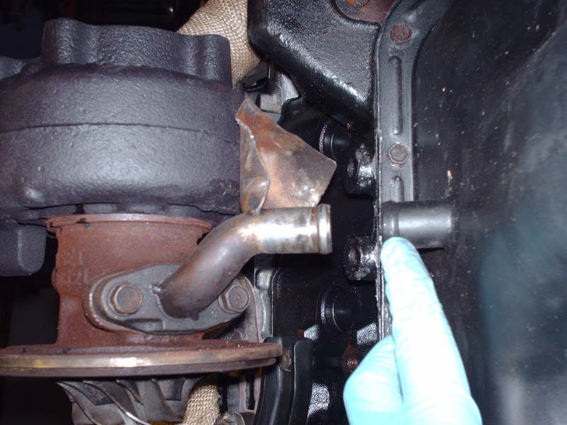
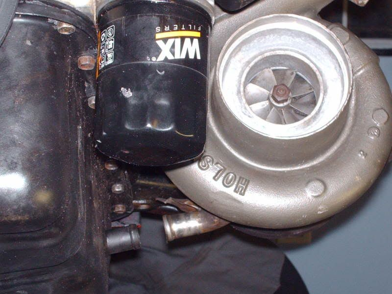
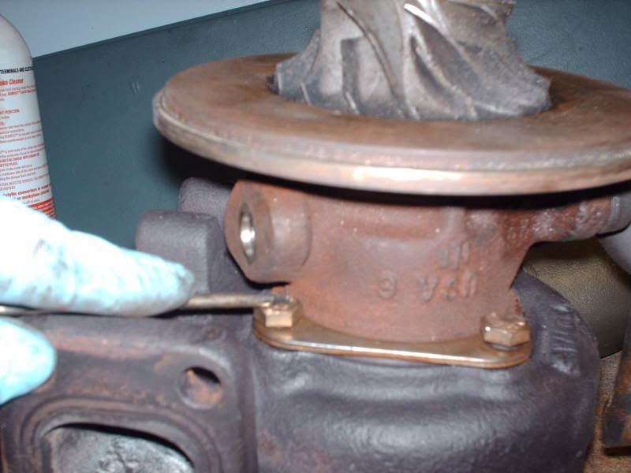
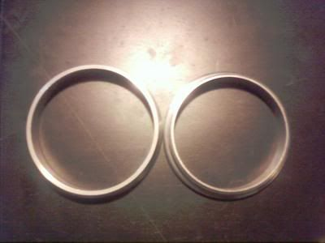
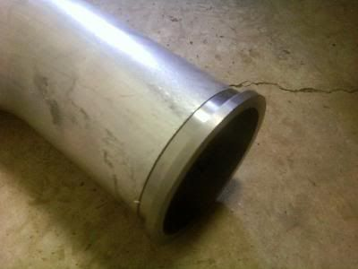
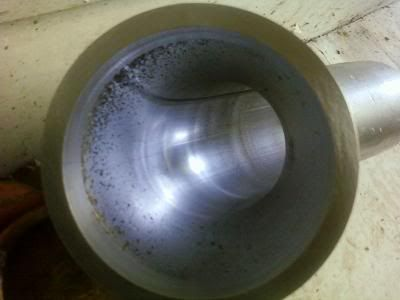

-
Re: Holset Turbo Install FAQ (and Holset Info w/ Maps, p5)
Isn't this the fitting that everyone has been looking for to thread into the block?
http://store.summitracing.com/partdetai … toview=sku
It's a 12mm x 1.25 to 4an for the block.
So you need that one for the block, and this one for the turbo:
http://store.summitracing.com/partdetai … 9919BFGERL
Then run a 4an line to both.
Unless I misread something...........maybe put that part # in the first post too.1987 300ZX Turbo - http://z31performance.com/forum/vie … php?t=3114
2001 Tiburon Turbo 60-1 270whp/268tq
No cupholders? Where am I gonna put my beer????
-
Re: Holset Turbo Install FAQ (and Holset Info w/ Maps, p5)
EAR-849092ERL
Fitting, Hose End, Swivel Seal, 90 Degree, -4 AN Hose to Male 12mm x 1.5, Aluminum, Red/Blue, Each $31.39
This part is actually a -6 AN hose connector part. Summit could not find a -4 AN 90 with the correct threading for the Holset.
So I went ahead and got that part Evil Z31 found and ordered another -4AN Summit hose connector for it. It'll be straight into the top of the turbo, and should clear the strut tower. -
Re: Holset Turbo Install FAQ (and Holset Info w/ Maps, p5)
Both fittings I mentioned will screw directly into the turbo and the block. Then you only need to run a straight 4an line between them. Only 3 parts needed. None of that conversion stacking nonsense.
However, you're gonna have to find a way to insert an oil restrictor.1987 300ZX Turbo - http://z31performance.com/forum/vie … php?t=3114
2001 Tiburon Turbo 60-1 270whp/268tq
No cupholders? Where am I gonna put my beer????
-
Re: Holset Turbo Install FAQ (and Holset Info w/ Maps, p5)
These Holset Downpipe adaptors now available if enough people want them, PM me for more details or better yet post in the thread under Engine Mechanical called "OK, Holset Downpipe Adaptors" We need a few more people and i will make a batch of them, but will be nicer then the one in this FAQ i built. -
Re: Holset Turbo Install FAQ (and Holset Info w/ Maps, p5)
Stainless Steel Oil feed line kits available as well. See the new thread about it. It will include:
Adaptor fitting at block
Adaptor fitting at Holset turbo
20" stainless steel braided line with -4AN fittings on it
PM me if ya want one -
Re: Holset Turbo Install FAQ (and Holset Info w/ Maps, p5)
What are your goals?
The wh1c and early 8blade compressor hx35 is good for 52lb/min based on the map, dyno, and trap speed results.
The later 7blade compressor hx35 is good for 60ish lb/min based on the map and airflow logs.
The wh1e and 8blade compressor hx40 (58mm inducer) is good for 60lb/min and a better flowing turbine will allow more flow (power) per psi. This will give you a little more lag but better pump gas possibilities.
The hx40 with the 60mm compressor inducer is good for 68lb/min :twisted: based on the map and dyno results.
The hx52 is good for 87 lb/min. And will take alot of wisdom to exploit and contain :baton
. . .As for the h1c. There are 2 common versions. The 'baby' h1c with a 50mm 7blade inducer; and the 'big' h1c with a 54mm 8blade inducer. Yes, that may be a large difference in inducer diameter. But, considering the cavitation effect of a high number of blades, loosing a blade really does alot to increase flow when the compressor has over 7 blades. the wh1c flows a little more than the big h1c and the small h1c has made 411 whp maxed out on efeezi's ka24 setup. I and another 4g63 guy have already seen 40-42lb/min at 25ish psi with a conservative, lower flowing 2.0liter build (remember, you all have 2 more cylinders and 50% more volume). So I can see the big h1c flowing around 48-50 lb/min. About where a 20g or 50-trim compressor is. . . But there are no maps!!!! I need the h1c maps!!!! : lease Are they gone forever? Holset won't help.
lease Are they gone forever? Holset won't help.
-
Re: Holset Turbo Install FAQ (and Holset Info w/ Maps, p5)
I just went out to measure my H1C. Strange you say there's only those two sizes you mentioned because mine has a 52mm inducer and 82mm exducer. I know mine has been modified by the previous owner, but he said that he only got the 14cm turbine housing upgrade. Strange that the compr. is an irregular size also. :-?1987 300ZX Turbo - http://z31performance.com/forum/vie … php?t=3114
2001 Tiburon Turbo 60-1 270whp/268tq
No cupholders? Where am I gonna put my beer????
-
Re: Holset Turbo Install FAQ (and Holset Info w/ Maps, p5)
Are you sure your measuring tool as accurate? The exducer for most of the pickup truck h1c turbos is 84mm not 82mm. Could your instrument be off by 2mm? The big h1c has a a 54mm/84mm wheel the Wh1c has a 56mm/84mm wheel. I've seen baby h1c turbos with a 45mm inducer.Evil Z31 wrote: I just went out to measure my H1C. Strange you say there's only those two sizes you mentioned because mine has a 52mm inducer and 82mm exducer. I know mine has been modified by the previous owner, but he said that he only got the 14cm turbine housing upgrade. Strange that the compr. is an irregular size also. :-?
Do you have Map width enhamcement webbing, does it look like you have anti-surge ports but there's no groove actually cut through the housing? Do you have a vband attached compressor wheel? The big h1c (54mm inducer) has these features. What is the assembly number? How many blades are in the inducer? 7 or 8. -
Re: Holset Turbo Install FAQ (and Holset Info w/ Maps, p5)
Digital Caliper. It's accurate.
8 blades
http://img.photobucket.com/albums/v214/ … e15d_1.jpg
http://img.photobucket.com/albums/v214/ … db1b_1.jpg
http://img.photobucket.com/albums/v214/ … e7d7_1.jpg
Says "H1C" right on the tag. I can get the assy. # later.1987 300ZX Turbo - http://z31performance.com/forum/vie … php?t=3114
2001 Tiburon Turbo 60-1 270whp/268tq
No cupholders? Where am I gonna put my beer????
-
Re: Holset Turbo Install FAQ (and Holset Info w/ Maps, p5)
Mine measures 54mm with my digital calipers. Holset h1c from a 1992 cummins diesel intercooled pickup. Assembly #3531456. Your's does not have the MWE webbing. This is not the Big h1c from the intercooled pickups. There is a Wh1c which has the MWE webbing and the groove all the way through the housing to make the MWE functional. I guess there are several wheels. I'd like to know which vehicle it came from. Mine flows a little less than the 8blade wh1c/hx35 (56mm inducer). Giving it 4lb/min less flow per 2mm, I say mine flows around the same as a 50-trim or about 49lb/min, since the the 8blade hx35/wh1c has a 52 lb/min compressor map. Yours probably flows about as much air as an 18g or 54-trim or 57-trim. Of course this is bench racing, but what can you do if you don't even have a compressor map
-
Re: Holset Turbo Install FAQ (and Holset Info w/ Maps, p5)
Fixed img links
roastin300 wrote: The Holset Turbocharger FAQ
By: Roastin300
This FAQ is provided to help with the installation of a Holset turbocharger from the Dodge Cummins turbo diesel trucks. While each turbocharger can be fitted, this particular install is an HX35 model turbo from the 5 speed Cummins.
Why choose a Holset turbo you say? Well, there are many good reasons. Some include their very low cost used, comparable specs to the Garrett aftermarket high performance turbos (in fact, Holset started out making outright Garrett knock-offs), they are easy to come by online used and still in good working condition, most have T3-compatible turbine housing flanges, and some have internal wastegates.
First, lets take a look at some of the different models of Holset turbochargers that can be obtained, and their specs in comparison to a Garrett turbo:
HY35 ââ¬â Came on the Automatic 5.9L Dodge Cummins. Turbine housing roughly has a .55 A/R and a T3 stage 3 turbine wheel. The compressor housing is about .60 A/R and the compressor wheel flow is .46 kg/s, which converts to 60.8 lbs/min.
HX35 ââ¬â Came in the 5 speed 5.9L Dodge Cummins Turbo Diesel. Very similar to the HY35, has the same turbine and compressor wheels but utilizes roughly a .80 A/R turbine housing and a .70 A/R Compressor housing. Also flows 60.8 lbs/min.
HX40 ââ¬â Came in the 8.3L Dodge Turbo Diesel motors. Everything on this turbo is much larger, the turbine housing is a 1.00 A/R+ and the turbine wheel is approximately a P trim in garret specs. The compressor housing is approximately a .70 A/R and the compressor wheel flows .53 kg/s, which converts to 70.1 lbs/min.
HX50/55 ââ¬â Enormous, never seen one in person but the compressor wheel flows .75 kg/s which converts to 99 lb/min.
H1C ââ¬â Came on the much older Dodge Cummins. Very similar to the HX35 but flows slightly less and is said to spool a little slower due to older and less efficient technology.
H1E ââ¬â Comparable to the HX40 specs, but the older version just like the H1C is to the HX35.
This information I have given is not exact, however, it is composed of good approximations from my research I have done along with a margin of error for unit conversion.
Choosing Your Holset:
Selecting the ââ¬Årightââ¬Â model from these turbos to fit on a Z31 300ZXââ¬â¢s VG30ET engine is fairly simple.The HY35 will support about 400RWHP, will spool very fast, nearly as fast as a stock T3. I am currently running the HX35 and it will support roughly 450RWHP, and my spool time is around 3600-3800 full 18lbs boost. This is comparable to the spool you would expect from a Garrett ââ¬Åstage 3ââ¬Â turbine and a large T4 compressor, and the same performance, but at a fraction of the cost. I used to run a HX40 in the past, but I didnââ¬â¢t get full 18lbs of boost until around 4300RPM, making for a very short power-band. Because of its larger sized turbine and housing, the HX40 should support 550RWHP+.
I donââ¬â¢t recommend the H1C or H1E because they are outdated and harder to find anyway; the HX50/55 is just stupid-huge for our 3.0 Liter V6 and would be a very poor investment (unless you plan to spool it with gobs of nitrous).
Installation:
To fit a HX35 into a Z31 300ZX, a few relatively minor modifications must be done to the turbo and oil delivery system. Letââ¬â¢s look at the mechanical side of it:
The compressor housing needs modification. You need to grind down the V-band outlet on the 2.5ââ¬Â compressor outlet. This needs to be done so a normal 2.5ââ¬Â silicone coupling can be slid over it and clamped. This picture kind of shows it, you will fully understand what I mean when it comes time and you have the turbo in front of you.
Some Holset models have two studs and four holes for the turbine housing inlet flange, instead of the ââ¬Åusualââ¬Â 4 holes with 4 studs on the manifold. You can simply drill the studs out of the turbine housing with a clearance hole large enough for the studs on your manifold to clear.
Next is the wastegate actuator. The stock Holset wastegate actuator should not be used as it is designed to run a lot more boost and will probably not fit well if at all with the turbocharger mounted. Almost any internal wastegate actuator from another car can be used because they all work in the same way. I chose to use a Ford 2.3 Liter turbo actuator diaphragm. I cut the rod and welded in an adjustable end to adjust my preload on the actuatorââ¬â¢s internal spring. It will also need a new bracket to hold the actuator itself physically to the compressor housing. I was able to cut, bend and drill the stock Ford bracket to work. As you can see the actuator rod is pretty short and I bolted it to one of the threaded holes on the turbine housing that the original unit bolted to.
The next part is much harder and requires some real fabrication skills. You need to make either a downpipe adaptor to the stock downpipe or aftermarket exhaust made to fit the stock turbo exhaust elbowââ¬â¢s 3-bolt flange. Another solution is to make a completely new custom downpipe. I chose to make an adaptor; here are a few pictures of it. First I made the flange to fit the turbine outlet.
Then I used the 3ââ¬Â mandrel bent pipe I purchased online to mate up with my 3ââ¬Â downpipe. I bought a 3 bolt universal 3ââ¬Â flange and welded it at the bottom to bolt to the downpipe. You can also see that I took the extra time to weld in a smoother transition for the wastegate opening rather than going straight into the flange and intersecting with the turbine exhaust flow. In theory this should give slightly better flow and more precise boost control.
Here are the pictures with the turbo installed:
Now as far as the oil system, the stock oil return works perfectly on the HX35. Mine is different because I have a N/A oil pan with a fitting welded on it. But I know it will work for a fact because I had this setup with a stock turbo, and when I swapped my HX35 in the oil return lined up and sealed perfectly.
The oil feed line must be swapped as the oil inlet on the Holset turbos are threaded and need a fitting. I purchased a stainless steel ââ¬â4 AN line with an adaptor fitting to go from the block to the line, and bought a fitting that screwed into the holset turbo inlet and had the ââ¬â4 AN fitting on the other end, presto, a great oil feed setup! The fitting size for the holset's oil inlet is 12mmx1.5, the oil feed hole from the vg30 block is 12mmx1.25
For the intake before the compressor you can go many routes from a pipe motor mount setup, a new motor mount to route big 4ââ¬Â piping to it, the sky is the limit. If you have a MAP sensor with a speed-density system like myself, I run a little butterfly filter right on the compressor inlet with no extra piping to deal with!
You will need to rotate the center section and compressor housing as needed to fit right in the vehicle to line up the compressor outlet, oil feed and oil return. This is called ââ¬Åclockingââ¬Â the turbo and is fairly easy to do with it test-fitted in place.
Thatââ¬â¢s it; happy hunting for a used Holset!Jukka Kivinen - Europe / Finland - '88 Turbo 2+2 Targa
Datsun Nissan Sports Cars of Finland
http://www.z31turbo.com / http://www.z31na.com -
Re: Holset Turbo Install FAQ (and Holset Info w/ Maps, p5)
I am having some clearance issues with my he351 holset, anybody know if the hy35 turbine housing will work with the he351? Right now I am going to have to get pretty creative with the downpipe if i cant find a different housing. Also would anyone know the physical outside dimensions of the hy35 or hx35 compressor housing? I need to see if its the thicker exhaust flange that is causing my compressor housing to hit the steering rack. peace."Its the s12's sexy over weight step daughter, the z31" -
Re: Holset Turbo Install FAQ (and Holset Info w/ Maps, p5)
well it looks like I have figured out how to get around the clearance issues. I have started clearancing the stock HE351 DP to clear the steering shaft, the compressor housing now clears the power steering rack lines, and I have come up with a new mounting setup for the wastegate actuator. I have pics posted over at 88hybrid http://www.88hybrid.com/forum/viewtopic.php?t=10586 lemme know what you guys think. peace."Its the s12's sexy over weight step daughter, the z31" -
Re: Holset Turbo Install FAQ (and Holset Info w/ Maps, p5)
I don't think this was covered in the thread so far. The Z31 T3 oil outlet fits nicely on the HX35, and even lines up great with the Z31T oil pan when the HX35 CHRA is clocked correctly. The only issue is a turbine clamp bolt gets right under the oil inlet flange, this is easily overcome by setting the CHRA loosely into the turbine housing and rotate it out of the way, begin threading your bolts down, then clock to your marked positions and tighten.
required gasket nissan PN 15196-P7600


bitch bolt below
 -
Re: Holset Turbo Install FAQ (and Holset Info w/ Maps, p5)
There is not much on here about the he351cw. I am working on putting on on my z and have some info to share with anyone looking at this turbo. From what i have found over the last year of research is the he351cw looks the same as the hy35 but has a better flowing exhaust housing and a compressor wheel that is 2mm bigger than the hx35. I have seen a couple threads on a dodge diesel forum about them using these turbos as upgrades to the hx35. I am going to be using a satan manifold with this turbo because of how tight it fits in the stock location. The only problem i have run into so far is the he351cw uses a odd size v band. A 4 inch flange is to big and wont clamp to the turbo. I have heard of people grinding them down but they still have sealing problems with it. I sent my exhaust housing to a machine shop and had a mild steel flange made that clamps perfectly to the turbo and has a ridge that excepts a 4inch exhaust pipe. If anyone needs one of these i can get more. Here are some pics
on the left is the standard 4 inch flange, on the right is the holset flange


86na2t + holset
feedback
viewtopic.php?f=18&t=6114&hilit=andrew+gardner

{kind=link}
{kind=link}
{kind=link}
Copyright © 2006–. All rights reserved. Privacy Policy